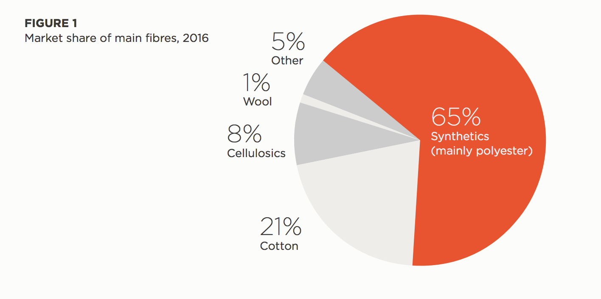

A textile is a flexible material consisting of a network of natural or artificial fibers (yarn or thread). Yarn is produced by spinning raw fibers of wool, flax, cotton, hemp, or other materials to produce long strands. Textiles are formed by weaving, knitting, crocheting, knotting, tatting, felting, or braiding.
The first clothes, worn at least 70,000 years ago and perhaps much earlier, were probably made of animal skins and helped protect early humans from the elements. At some point, people learned to weave plant fibers into textiles. The discovery of dyed flax fibers in a cave in the Republic of Georgia dated to 34,000 BCE suggests textile-like materials were made even in prehistoric times. Textile machinery at the Cambrian Factory, Llanwrtyd, Wales in the 1940s The production of textiles is a craft whose speed and scale of production has been altered almost beyond recognition by industrialization and the introduction of modern manufacturing techniques.

Clothes today are made from a wide range of different materials. Traditional materials such as cotton, linen and leather are still sourced from plants and animals. But most clothes are more likely to be made of materials and chemicals derived from fossil fuel-based crude oil. There are nine major types of raw materials commonly used in clothing today.
